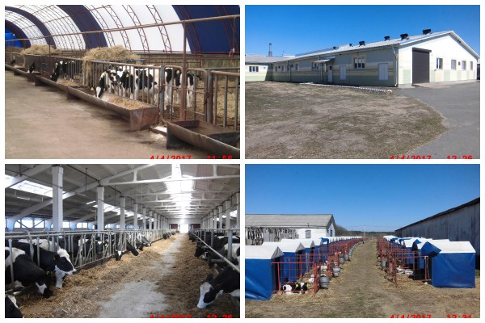

ОАО «Октябрьский-Агро» — одно из передовых аграрных предприятий Октябрьского района, которое занимается производством и реализацией продукции животноводства мясо-молочного направления, растениеводства. Сельское хозяйство активно внедряет в производство современные технологии, благодаря чему ежегодно улучшаются результаты работы. В составе хозяйства МТФ и фермы по доращиванию молодняка КРС, зерносушильные комплексы, плодородные пахотные земли, обширный автопарк, ремонтные мастерские.
